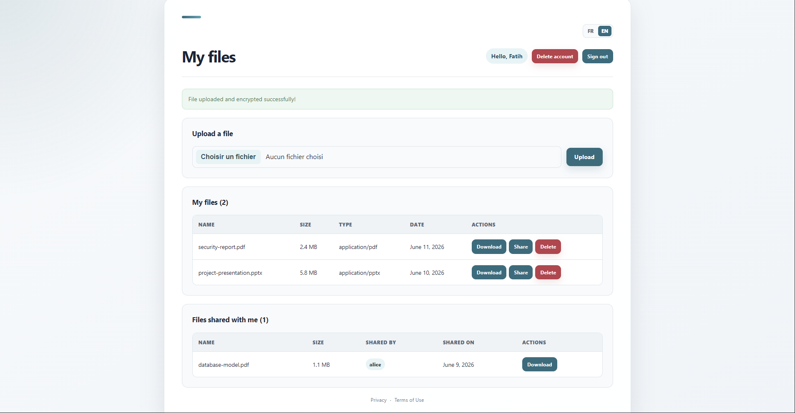

Dépôt
Upload
Le serveur reçoit le fichier et génère une clé AES unique et aléatoire.
The server receives the file and generates a unique random AES key.
Un Drive web conçu pour stocker et partager des fichiers chiffrés, en combinant cryptographie symétrique, clés publiques et contrôle d'accès.
A web Drive built to store and share encrypted files by combining symmetric cryptography, public keys and access control.

Concevoir un espace de stockage utilisable comme un Drive classique, sans conserver les fichiers en clair ni rendre leur partage dépendant d'une clé secrète commune.
Design a storage space that feels like a regular Drive without keeping files in plain text or relying on one shared secret key for file sharing.
L'application devait couvrir toute la chaîne : création de compte, dépôt, chiffrement, téléchargement, partage entre utilisateurs, vérification d'intégrité et suppression.
L'enjeu principal était de séparer le chiffrement rapide du fichier de la distribution sécurisée de sa clé aux utilisateurs autorisés.
The application had to cover the complete flow: account creation, upload, encryption, download, user-to-user sharing, integrity verification and deletion.
The key challenge was separating efficient file encryption from the secure distribution of its key to authorized users.
Le serveur reçoit le fichier et génère une clé AES unique et aléatoire.
The server receives the file and generates a unique random AES key.
Le contenu, le nom et le type MIME sont chiffrés avec authentification.
Content, filename and MIME type are encrypted with authentication.
La clé AES est chiffrée avec la clé publique de chaque utilisateur autorisé.
The AES key is encrypted with each authorized user's public key.
Les métadonnées et les droits d'accès sont conservés séparément du fichier chiffré.
Metadata and access rights are stored separately from the encrypted file.
Création de compte, mots de passe protégés avec Argon2id et gestion des clés utilisateur.
Account creation, Argon2id password protection and user key management.
Aucun fichier n'est stocké en clair ; son intégrité est contrôlée avant le téléchargement.
No file is stored in plain text; its integrity is checked before download.
Un fichier peut être partagé sans dupliquer son contenu ni transmettre sa clé AES en clair.
A file can be shared without duplicating its content or exposing its AES key.
Les autorisations sont vérifiées pour chaque téléchargement, partage et suppression.
Permissions are checked for every download, share and deletion request.
Ce projet m'a permis de passer de concepts cryptographiques théoriques à une application concrète, avec une attention particulière portée à la gestion des clés, aux droits d'accès et à l'expérience utilisateur.
This project helped me turn theoretical cryptography concepts into a practical application, with particular attention to key management, access rights and user experience.